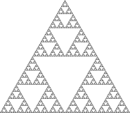

Le triangle de Sierpinski
Description du programme,
Pour tracer cette figure j'ai utilisé des courbes
J'avais un motif initial : F-G-G
- F et G signifie tous les deux un déplacement de 10 pixels
- + signifie detourner à gauche de 120°
- - signifie de tourner à doite de 120°
Grace à ce programme je remplaçait les F par F-G+F+G-F et les G par GG

Comment j'ai réaliser ce travail
Comme demandé dans les consignes, j'ai repris le code de la courbe de Koch.
J'ai ensuite remplacer le motif initial et j'ai changé une fonction pour qu'elle remplace F par F-G+F+G-F et G par GG.
Les difficultés rencontrées :
- J'ai eu un peu de mal à comprendre le programme car j'était absent lors du TP.
- Je me suis demandé si je devais faire le Tapis ou le Triangle de Sierpinski car il était question des deux selon les endroits.
- J'ai copié collé l'expression F-G+F+G-F directement depuis l'énoncé et à cause de ça mon programme ne fonctionnait pas et je ne savais pas pourquoi. En fait, le caractère - n'était pas le même que celui du clavier standard. En retapant manuellement l'expression, tout est rentré dans l'ordre.
Télécharger le fichier